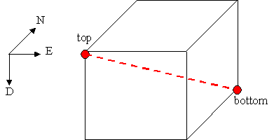

The pointset attributes dialog appears by right-clicking on a pointset or an elementset in the data storage tree and selecting attributes.
The dialog provides information about the distribution set. This dialog also provides the possibility to create distributed quantities using the set.
The dialog contains the following items:
|
Name |
Name of the
distribution set. |
|
Unassigned properties |
|
|
Distributed
quantities |
List of created quantities. |
|
Calculate
properties |
Invokes the RPN-Calculator. User defined properties can be created here. |
| Pull down menu of distributed quantities | A list of all available quantities to which a property can be assigned. Click the black arrow to select a quantity. |
General pointset information
|
Number of points |
Total number of points in the set. |
| Number of elements | Total number of elements in the set. This number equals 0 for a pointset. |
|
Dimension |
Dimension of the pointset, either 2D for a two-dimensional pointset or 3D for a three-dimensional pointset. |
Boundary box
|
Min |
Coordinates
(Northing, Easting,
Depth) of the top corner of the boundary enclosing the set. The top
corner has the minimum value for Northing, Easting and depth (see figure
below). |
|
Max |
Coordinates (Northing, Easting, Depth) of the bottom corner of the boundary enclosing the set. The bottom corner has the maximum value for Northing, Easting and depth (see figure below). |

Outline
definition boundary box
When creating a distributed quantity and assigning properties you have several options:
|
Interpret coordinates as |
There
are two options to interpret coordinates of the properties.
These options depends on the unit type:
|
|
Interpret value as |
|
| Z-Axis direction |
|